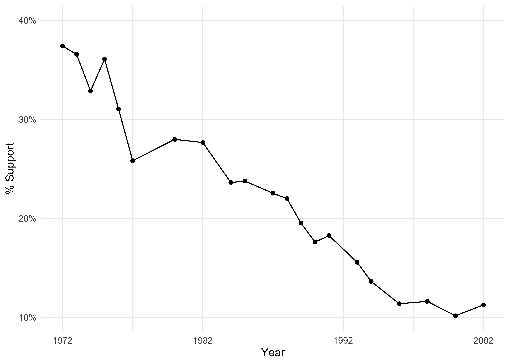
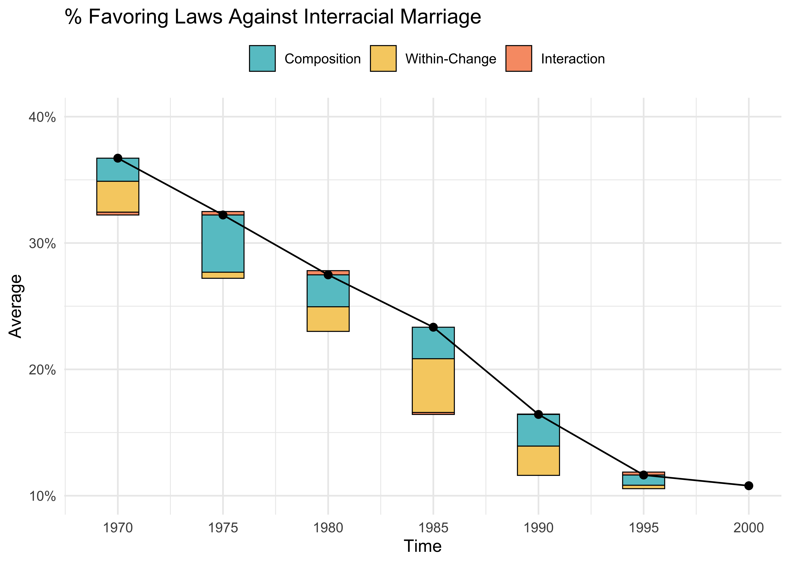

## install `gssr` if necessary
# install.packages(
# "gssr",
# repos = c(
# "https://kjhealy.r-universe.dev",
# "https://cloud.r-project.org"
# )
# )
library(gssr)
library(tidyverse)
## load GSS data
data("gss_all", package = "gssr")Visualizing the Dynamics of Opinion Change
We often present public opinion data as an average trend, typically using repeated estimates of a survey construct over time. This strategy is fine for overall description, but it obscures the fact that aggregate changes in public opinion can result from (1) people changing their minds, (2) the composition of the larger population changing, and (3) 1 and 2 happening simultaneously in ways that intensify a specific trend. Thus, a simple mean is generally silent on these distinctions (Keskintürk, Bello, and Vaisey 2025; Vaisey and Lizardo 2016).
There is, however, a straightforward way to pull these apart. Beheim and Baldini (2012) and Sobchuk and Beheim (2025) provide a very intuitive strategy to decompose any aggregate opinion change into a composition effect (changing group shares), a within-group effect (groups actually changing), and an interaction between the two. While their approach is applied to a census of individuals and not really tailored to public opinion data, the underlying logic is general enough that we might think about it in the context of opinion change.
I wrote a very simple R package—opin to implement this. You can install it from GitHub:
# install.packages("devtools")
devtools::install_github("tkeskinturk/opin")The visualization strategy follows the “decomposition plot” from Beheim and Baldini (2012): rather than placing decomposed effects on an abstract axis, it anchors them on the empirical trajectory of the outcome, so that we can immediately see what is driving the trend at each point in time.
A Simple Illustration
Let me illustrate why I think this strategy provides a better representation of public opinion change.
I will look into the racmar variable from the General Social Survey, which asks whether respondents favor laws against interracial marriage between 1972 and 2002.
We can use Kieran Healy’s fantastic package, gssr, for this task.
Let’s see how the support for such laws changed over time:
Code
## wrangle
d <- gss_all |>
select(period = year, cohort, racmar, wt = wtssps) |>
drop_na() |>
mutate(
## 1 = favor law against racial intermarriage
racmar = if_else(racmar == 2, 0L, 1L)
)
## look at trends
d |>
summarize(
ymean = weighted.mean(
x = racmar,
w = wt ## my apologies to the GSS board
),
.by = "period"
) |>
ggplot(
aes(
x = period,
y = ymean
)
) +
geom_line() +
geom_point() +
labs(x = "Year", y = "% Support") +
theme_minimal() +
scale_y_continuous(
limits = c(0.1, 0.4),
breaks = seq(
from = 0.1, to = 0.4, by = 0.1
),
labels = scales::percent_format()
) +
scale_x_continuous(
breaks = seq(
from = 1972, to = 2002, by = 10
)
)
This is a striking decline, but this average trend does not tell us whether the decline comes from people changing their minds or from the population itself changing over time.
Here is how opin handles this issue. Let’s load it first:
## install `opin` if necessary
# install.packages("devtools")
# devtools::install_github("tkeskinturk/opin")
library(opin)Now, we want to know whether the following three mechanisms drive the aggregate change:
- the mix of cohorts among the population may be changing,
- the groups themselves may be changing their opinions, or
- both may be happening simultaneously in ways that intensify a specific trend.
To evaluate this, I first calculate a cohort and period level support for laws against interracial marriage:
Code
s <- d |>
mutate(
## choosing 5-year bands for period and cohort values
period = floor(period / 5) * 5,
cohort = floor(cohort / 5) * 5
) |>
summarise(
y = weighted.mean(racmar, wt),
n = n(),
.by = c(period, cohort)
) |>
mutate(share = n / sum(n), .by = period) |>
arrange(period, cohort)
print(s)# A tibble: 110 × 5
period cohort y n share
<dbl> <dbl> <dbl> <int> <dbl>
1 1970 1880 1 5 0.00129
2 1970 1885 0.613 22 0.00569
3 1970 1890 0.757 58 0.0150
4 1970 1895 0.667 133 0.0344
5 1970 1900 0.689 184 0.0476
6 1970 1905 0.482 248 0.0641
7 1970 1910 0.481 264 0.0683
8 1970 1915 0.426 308 0.0796
9 1970 1920 0.440 356 0.0921
10 1970 1925 0.363 322 0.0833
# ℹ 100 more rowsHere, y is average support, n is the number of individuals in the GSS from a particular cohort c and period p, and share is the share of that cohort in the larger population.
We can then feed this data into decomp from the opin package:
## apply
res <- decomp(
data = s,
tname = "period",
gname = "cohort",
yname = "y",
sname = "share"
)
## print
res |> glimpse()Rows: 6
Columns: 8
$ prev_period <dbl> 1970, 1975, 1980, 1985, 1990, 1995
$ curr_period <dbl> 1975, 1980, 1985, 1990, 1995, 2000
$ prev_ybar <dbl> 0.3671661, 0.3221970, 0.2748205, 0.2333722, 0.1643334, 0.1…
$ curr_ybar <dbl> 0.3221970, 0.2748205, 0.2333722, 0.1643334, 0.1163826, 0.1…
$ delta_ybar <dbl> -0.044969010, -0.047376568, -0.041448252, -0.069038812, -0…
$ C <dbl> -0.018299133, -0.045293658, -0.025283959, -0.024954150, -0…
$ W <dbl> -0.024447160, -0.004822172, -0.019482381, -0.042550162, -0…
$ R <dbl> -0.0022227176, 0.0027392624, 0.0033180876, -0.0015344991, …What we end up with are three values:
- C: composition effect (cohort entry, cohort exit, and cohort share changes),
- W: within-cohort attitude change (average change for a cohort compared to previous period),
- R: interaction of C and W.
And we can visualize these shares as follows:
decompPlot(res) +
labs(title = "% Favoring Laws Against Interracial Marriage") +
scale_y_continuous(
limits = c(0.1, 0.4),
breaks = seq(
from = 0.1, to = 0.4, by = 0.1
),
labels = scales::percent_format()
)
The bars show how much of each period’s change comes from composition (cohort replacement), within-group attitude change, and their interaction. The line traces the aggregate approval rate.
This is, I think, a much richer picture than the previous trend line alone. We see that both composition and within-cohort change contribute to the decline, but their relative importance changes over time. The interaction term is negligible throughout, meaning that these two processes are largely independent of each other.
For those interested, I provide a simple algebraic derivation of the decomposition below.
Algebraic Derivation (Open at Your Own Peril)
A Simple Algebraic Derivation
Basic Notation
Assume that there are G groups active in the current time period in a population.
We will observe each group g \in G over discrete census times t \in \{0, 1, ...\}, and we will record the number of individuals in group g at time t without error as N_{g, t}.
Note also that the total population size at time t is thus N_t = \sum_{g} N_{g, t}.
With these components, we can calculate the population share of group g at time t simply as s_{g, t} = \frac{N_{g, t}}{N_t}, with \sum_{g} s_{g, t} = 1.
In this setup, the overall population mean of our focal variable y at time t is
\bar{y}_t = \sum_{g \in G} s_{g, t} \bar{y}_{g, t}
where \bar{y}_{g, t} is the mean of the focal variable within group g at time t. Once again, this is measured without error.
Group Population Dynamics
Between time periods, the set of active groups will obviously change. Assume that we are currently at t - 1. In the subsequent time period t, there are equivalently G' groups active, with
G' = G + I - E
where I groups begin contributing to the population at time t (e.g., new cohorts reaching survey age), E groups stop contributing after t - 1 (e.g., cohorts dying out), and G - E groups persisting.
Decomposition Terms
For a single step from time t - 1 to time t, we decompose \Delta \bar{y}_t = \bar{y}_t - \bar{y}_{t - 1} into three effects.
Group-Level Entry/Exit Effects (C_t). Change in the overall mean induced by groups gaining or losing population shares, evaluated at appropriate baseline group means.
C_t = \sum_{g \in G \cap G'} (s_{g, t} - s_{g, t - 1}) \bar{y}_{g, t - 1} + \sum_{g \in I} s_{g, t} \bar{y}_{g, t} - \sum_{g \in E} s_{g, t - 1} \bar{y}_{g, t - 1}
where I is the set of groups entering at time t, E is the set of groups exiting after time t - 1, and G \cap G' is groups present at both periods. This term simply represents aggregate mean change that comes only from the changing weights of groups.
Within-Group Change Effect (W_t). Change in the population mean driven by groups changing their mean outcomes, weighted by baseline population shares:
W_t = \sum_{g \in G \cap G' } s_{g, t - 1} (\bar{y}_{g, t} - \bar{y}_{g, t - 1})
This term embodies all period shocks and life-cycle (aging) dynamics.
Interaction Effect (R_t): The weighted covariance between \Delta s_g and \Delta \bar{y}_g.
R_t = \sum_{g \in G \cap G' } (s_{g, t} - s_{g, t - 1}) (\bar{y}_{g, t} - \bar{y}_{g, t - 1})
Substantively, this term captures whether turnover across groups and opinion dynamics within groups are working in the same or in opposite directions.
When R_t > 0, groups whose population share is rising are simultaneously the groups whose opinions are shifting in the same direction as the overall trend. When R_t < 0, groups that are gaining share are moving against the trend. When R_t \approx 0, changes in group shares are uncorrelated with within-group change.
The accounting of the group-level change is thus:
\Delta \bar{y}_t = C_t + W_t + R_t
Identifying Assumptions
There are several assumptions required for group-level decomposition to work:
- Assumption 1: Within each group g, entry and exit processes are independent of individual y values. Specifically:
- No differential migration by y level within groups,
- No differential mortality by y level within groups,
- No differential survey participation by y level within groups.
- Assumption 2: All population shares s_{g,t} and group means \bar{y}_{g,t} are measured without error to ensure the decomposition holds exactly. This can be relaxed depending on the application.
- Assumption 3: Boundaries between groups g are stable and exogeneous to the outcome.
- Assumption 4: The decomposition is additive and separable, such that mean change in group g cannot depend on the changing size of another group g'.
Derivation of Decomposition
Start from the definition of population mean change: \Delta \bar{y}_t = \bar{y}_t - \bar{y}_{t - 1} \ \tag{1}
Substitute the population means using group shares s and group means \bar{y}: \Delta \bar{y}_t = \sum_{g \in G \cup G'} s_{g, t} \bar{y}_{g, t} - s_{g, t - 1} \bar{y}_{g, t - 1} \ \tag{2}
Separate the summation by group type (persisting, entrance, and exiting):
\Delta \bar{y}_t = \sum_{g \in G \cap G'} s_{g, t} \bar{y}_{g, t} - s_{g, t - 1} \bar{y}_{g, t - 1} + \sum_{g \in I} s_{g, t} \bar{y}_{g, t} - \sum_{g \in E} s_{g, t - 1} \bar{y}_{g, t - 1} \ \tag{3}
- For persisting groups, add and subtract s_{g, t} \bar{y}_{g, t - 1} for every g:
\begin{aligned} \Delta \bar{y}_t = & \sum_{g \in G \cap G'} s_{g, t} \bar{y}_{g, t} - s_{g, t - 1} \bar{y}_{g, t - 1} + s_{g, t} \bar{y}_{g, t - 1} - s_{g, t} \bar{y}_{g, t - 1} \\ & + \sum_{g \in I} s_{g, t} \bar{y}_{g, t} - \sum_{g \in E} s_{g, t - 1} \bar{y}_{g, t - 1} \end{aligned} \ \tag{4}
- Regroup terms to separate entrance/exit/share effects and within-group effects:
\begin{aligned} \Delta \bar{y}_t = & \sum_{g \in G \cap G'} (s_{g, t} - s_{g, t - 1}) \bar{y}_{g, t - 1} + s_{g, t} (\bar{y}_{g, t} - \bar{y}_{g, t - 1}) \\ & + \sum_{g \in I} s_{g, t} \bar{y}_{g, t} - \sum_{g \in E} s_{g, t - 1} \bar{y}_{g, t - 1} \end{aligned} \ \tag{5}
- Rewrite using baseline weights to achieve single reference point:
\begin{aligned} \Delta \bar{y}_t = & \sum_{g \in G \cap G'} (s_{g, t} - s_{g, t - 1}) \bar{y}_{g, t - 1} + s_{g, t - 1} (\bar{y}_{g, t} - \bar{y}_{g, t - 1}) + (s_{g, t} - s_{g, t - 1})(\bar{y}_{g, t} - \bar{y}_{g, t - 1}) \\ & + \sum_{g \in I} s_{g, t} \bar{y}_{g, t} - \sum_{g \in E} s_{g, t - 1} \bar{y}_{g, t - 1} \end{aligned} \ \tag{6}
- Re-arrange the terms for entry/exit/share, within-group change, and interactions:
\begin{aligned} \Delta \bar{y}_t = & \sum_{g \in G \cap G'} (s_{g, t} - s_{g, t - 1}) \bar{y}_{g, t - 1} + \sum_{g \in I} s_{g, t} \bar{y}_{g, t} - \sum_{g \in E} s_{g, t - 1} \bar{y}_{g, t - 1} \\ & + \sum_{g \in G \cap G'} s_{g, t - 1} (\bar{y}_{g, t} - \bar{y}_{g, t - 1}) \\ & + \sum_{g \in G \cap G'} (s_{g, t} - s_{g, t - 1})(\bar{y}_{g, t} - \bar{y}_{g, t - 1}) \end{aligned} \ \tag{7}
References
Beheim, Bret A, and Ryan Baldini. 2012. “Evolutionary Decomposition and the Mechanisms of Cultural Change.” Cliodynamics: The Journal of Quantitative History and Cultural Evolution 3 (2): 217–33. https://doi.org/10.21237/C7CLIO3212123.
Keskintürk, Turgut, Pablo Bello, and Stephen Vaisey. 2025. “The Promises and Pitfalls of Using Panel Data to Understand Individual Belief Change.” Political Psychology, July. https://doi.org/10.1111/pops.70056.
Sobchuk, Oleg, and Bret Beheim. 2025. “Does Literature Evolve One Funeral at a Time?” Proceedings of the Royal Society B: Biological Sciences 292 (2040): 20242033. https://doi.org/10.1098/rspb.2024.2033.
Vaisey, Stephen, and Omar Lizardo. 2016. “Cultural Fragmentation or Acquired Dispositions? A New Approach to Accounting for Patterns of Cultural Change.” Socius: Sociological Research for a Dynamic World 2: 237802311666972. https://doi.org/10.1177/2378023116669726.